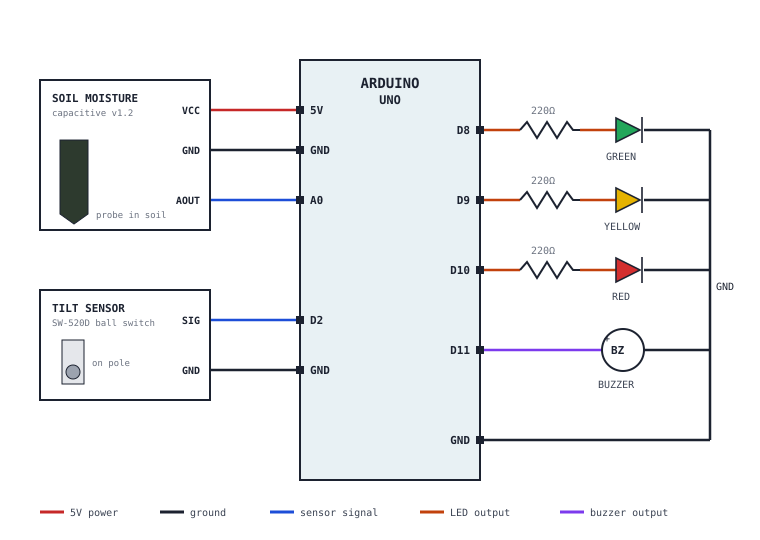

Know before the hillside moves.
An Arduino that watches wet soil and ground tilt, for about ৳1,500.
Run a storm yourself
Press Start rain, or drag the moisture and tilt sliders. It runs the same rules as the Arduino code.
Two sensors, three levels
A probe in the soil measures water. A tilt switch on a pole in the slope trips when the ground moves.
Soil moisturePoleLevelOutput
Below 70%UprightSafeGreen LED
70% or moreUprightWarningYellow LED, short beeps
Below 70%TiltedWarningYellow LED, short beeps
70% or moreTiltedDangerRed LED, continuous alarm
Wet soil alone would raise the alarm every rainy day, and movement alone can come too late. Wet soil warns early; movement confirms it.
Build it on a breadboard
No soldering. Parts are sold in most Bangladeshi electronics shops.
Parts
Arduino Uno × 1৳580–950
Capacitive soil moisture sensor v1.2 × 1৳195–230
SW-520D tilt sensor × 1৳30–150
LEDs, green, yellow, red × 3৳10–15
220 Ω resistors × 3৳5
Active buzzer, 5 V × 1৳20–40
Breadboard and jumper wires৳200–300
USB cable or 9 V battery৳60–150
Total৳1,100–1,850
Typical Bangladeshi shop prices, November 2026.
Wiring
Moisture sensorAOUTA0
Tilt sensorleg 1D2
Green LED + 220 Ωlong legD8
Yellow LED + 220 Ωlong legD9
Red LED + 220 Ωlong legD10
Buzzer+D11
Sensor powerVCC5V
Everything elseGND, −GND
The tilt sensor needs no resistor: the code turns on the Arduino’s internal pull-up.

The decision, in five lines
bool wet = moisture >= WET_LIMIT; // 70%
RiskLevel level = SAFE;
if (wet && tilted) level = DANGER;
else if (wet || tilted) level = WARNING;
showLevel(level); // LEDs on D8 to D10, buzzer on D11Upload it
- Open
landslide_warning.inoin the Arduino IDE. - Pick
Arduino Unoand its port, then Upload. - Open the Serial Monitor at
9600baud. - Put your dry and wet readings in
DRY_VALUEandWET_VALUE.
For Wokwi, paste wokwi/sketch.ino and wokwi/diagram.json into its tabs.